On this page
📋 Starting your session: confidence check
Once your workshop session has started, please complete this short questionnaire before beginning your first project during the workshop you attend today. It helps us understand how confident you feel before the session.
Open the starting confidence check ↗DIGITAL SKILLS LAB · STATA
Stata Fundamentals 5: If qualifiers
A practical guide to selecting observations, combining conditions and recoding variables with if qualifiers.
About this session
In this unit, you are going to learn about if qualifiers. The if qualifier enables you to carry out a command on a subset of the dataset for which the expression being used in the if qualifier is true.
This way you can run a command for specific categories, that is, for instance, only female participants, but also for a specific range of values of a continuous variable, for instance, only participants with a minimum amount of income or a combination of both.
In this practical session, you will learn:
- about the purpose of if qualifiers
- how to use single if qualifiers
- how to combine multiple if qualifiers
More information on how the session is run
How to work together in the Zoom sessions:- Please turn on your microphone and webcam.
- One shares the screen and the other requests remote control.
- Take turns on who types for each exercise.
- Ask the trainer if you struggle to find a solution.
- Use the help command. To get help with a specific command type help "command name"
- Search online. The statalist.org forum is usually the most useful resource.
if qualifiers: single expressions
With an if qualifier you can limit the scope of a command to those observations for which the expression you use after the if is true.
Let us look at a few examples to explain how if qualifiers work.
If we use the list command on the variables make and price, Stata will print all observations for those two variables.
. webuse auto, clear
(1978 Automobile Data)
. browse make price
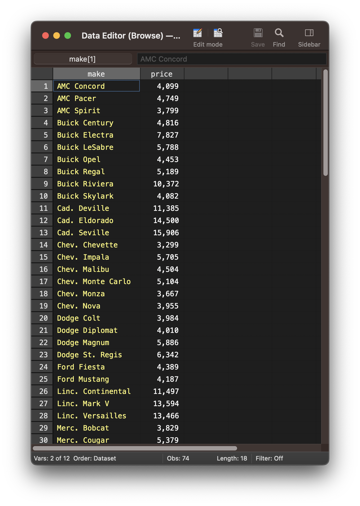
We can use an if qualifier with the list command to limit the observations that are being printed. If, for instance, we only wanted to print observations with a price above 10000, we have to add an if qualifier followed by the expression price > 10000 to the command.
Stata will evaluate the expression for every observation in the dataset and create a subset of the data for those observations for which the expression is true.
Then Stata will run the list make price command on this particular subset of the data.
. browse make price if price > 10000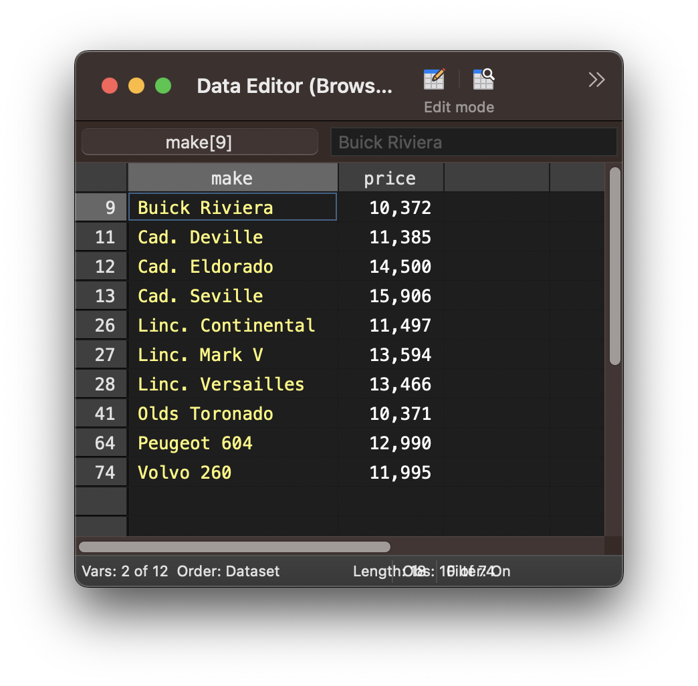
The > operator is used to test whether a variable is larger than a particular value. Below are examples of the other operators that can be used to create expressions.
To run a command on a subset where a variable is equal to a particular value use the == operator.
. browse price if price == 10372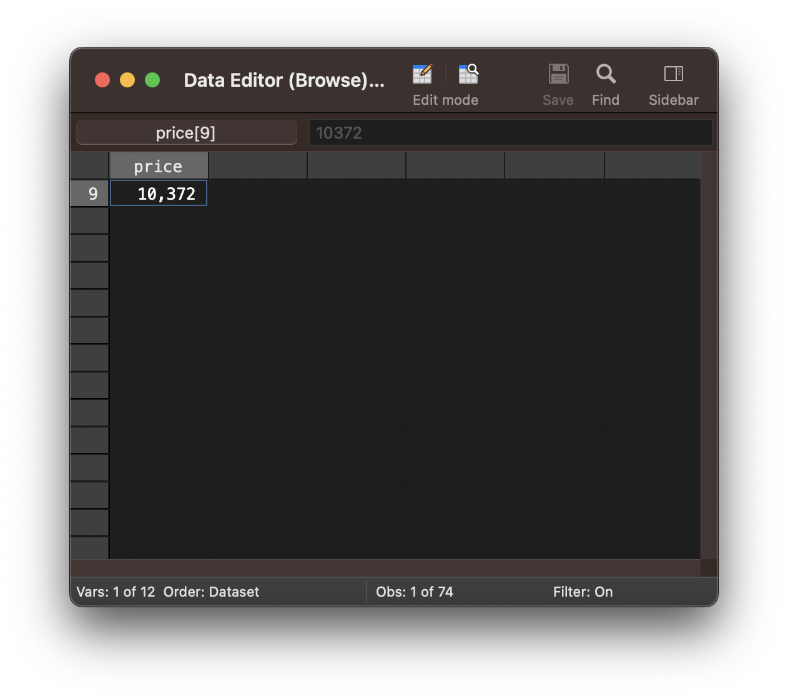
To run a command on a subset where a variable is smaller than a particular value use the < operator.
. browse price if price < 5000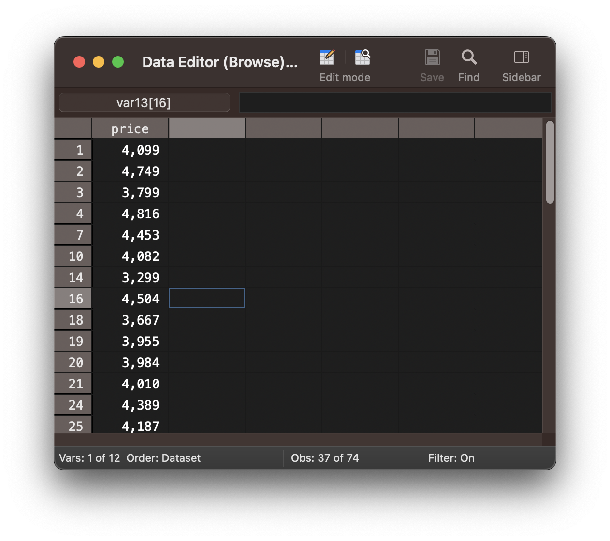
To run a command on a subset where a variable is larger or equal to a particular value use the >= or <= operator.
. browse price if price >= 11385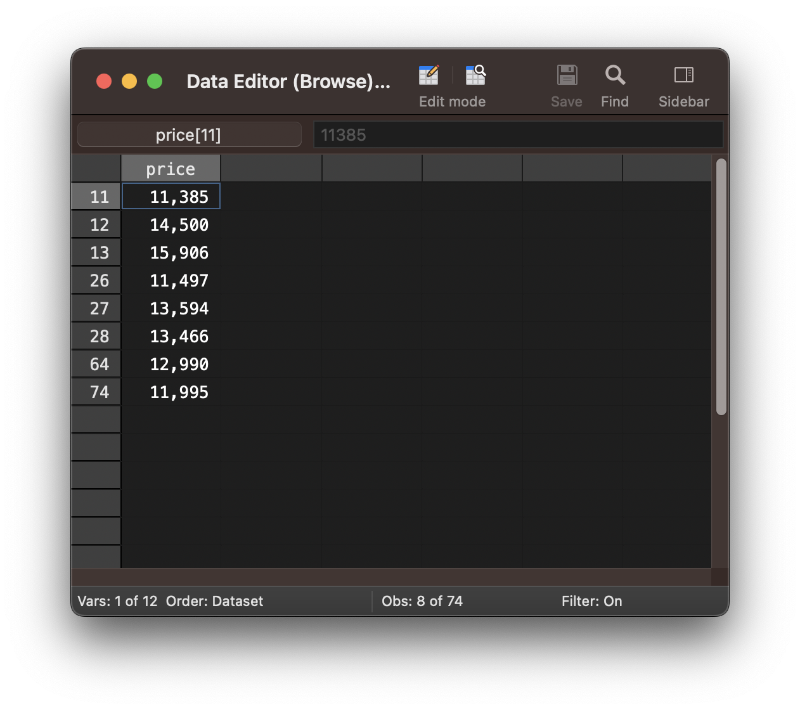
. browse price if price <= 4749To run a command on a subset where a variable is larger or equal to a particular value use the != operator.
. browse price if price != 10372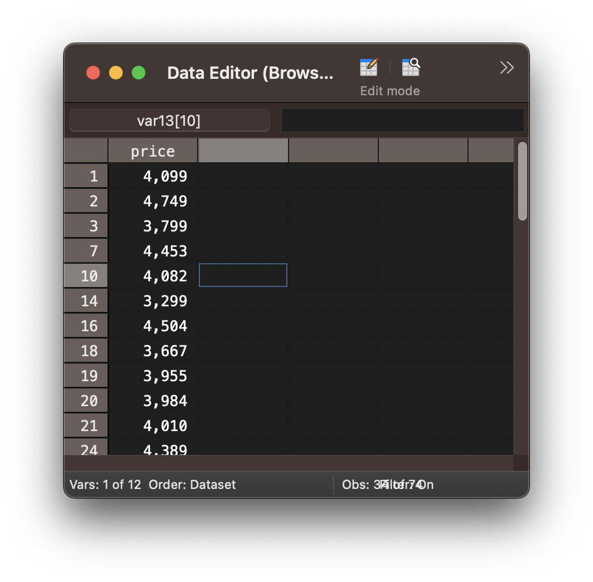
Let us look at another example using the sum command. The sum command will create a table with descriptive statistics (mean, standard deviation).
. sum price
Variable | Obs Mean Std. Dev. Min Max
-------------+---------------------------------------------------------
price | 74 6165.257 2949.496 3291 15906
If we wanted to print the descriptive statistics of the price variable only for cars from the United States, we can add an if qualifier with the expression foreign == 0, as 0 represents domestic, that is, US cars.
You can see that the number of observations is 52, since only those observations where the variable foreign has the value 0 have been selected.
. sum price if foreign == 0
Variable | Obs Mean Std. Dev. Min Max
-------------+---------------------------------------------------------
price | 52 6072.423 3097.104 3291 15906
In case you do not know the mapping of numbers and labels for a specific variable, you can use the codebook command, which contains a table with the mapping.
. codebook foreign
----------------------------------------------------------------------------------------------------------------------------------------------------------------------------------------------------------------------------------------------------------
foreign Car type
----------------------------------------------------------------------------------------------------------------------------------------------------------------------------------------------------------------------------------------------------------
type: numeric (byte)
label: origin
range: [0,1] units: 1
unique values: 2 missing .: 0/74
tabulation: Freq. Numeric Label
52 0 Domestic
22 1 Foreign
Exercise 1: if qualifiers with single expressions
- Load the auto dataset
- List cars with a weight below 2000
- Print the descriptive statistics of the weight variable for foreign cars.
- Run the four commands below, to split the make variable into two separate
variables; one for the make and one for the model.
The split command will split the make variable into the three variables make, make2 and make3. The generate command combines the make2 and make3 variables into the variable model. Then we delete the make, make2 and make3 variable and rename the make1 variable to make.
split make generate model = make2+" "+make3 drop make make2 make3 rename make1 make - Print the descriptive statistics of the price variable for Dodge and VW cars to determine which is more expensive on average - Dodge or VW?
if qualifiers: multiple expressions
Sometimes you might want to run commands on a subset that is defined by a combination of conditions or variables. To do so, we have to combine two or more expressions in an if qualifier.
For instance, to only list cars with a price above 6000 and lower than 7000, you would have to use the expression price > 6000 & price < 7000. Notice, that you only use one if qualifier and combine both expressions with the & symbol. By using the & Stata knows that both conditions, that is, price > 6000 and price < 7000 have to be true for an observation to be included in the subset on which the list command will be executed.
. browse if price > 6000 & price < 7000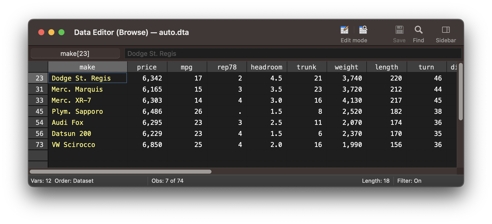
Below is another example of how you can combine two expressions with an if qualifier to select a subset of the data for cars from outside the US with a price below 5000 USD.
. list if foreign==1 & price < 5000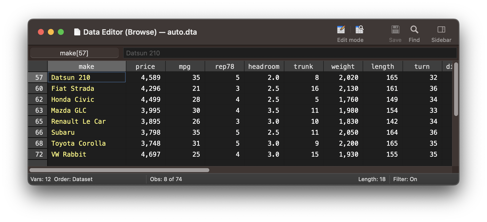
Make sure to run the commands from the previous exercise in order to split the make variable into two separate make and model variables before you continue!
. webuse auto, clear
(1978 Automobile Data)
. split make
variables created as string:
make1 make2 make3
. generate model = make2+" "+make3
. drop make make2 make3
. rename make1 make
What if you would like to print only Dodge or Ford cars? You have to use the | symbol to combine the two expressions brand==“Dodge” and brand==“Ford”. This way Stata will select a subset where the brand variable is either equal to the value “Dodge” or “Ford”.
. browse if make=="Dodge" | make=="Ford"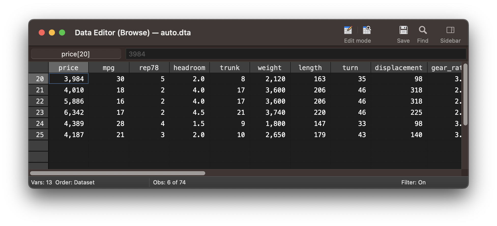
In order to run a command on a subset of your data that is defined by an even more complex set of conditions, you might have to combine three or more expressions.
If you wanted to select cars from either Dodge or Buick with a price below 5000 USD, you would have to combine three expressions. Intuitively, you might assume that the if qualifier below should create a subset of that data.
. list make price if make=="Dodge" | make=="Buick" & price < 5000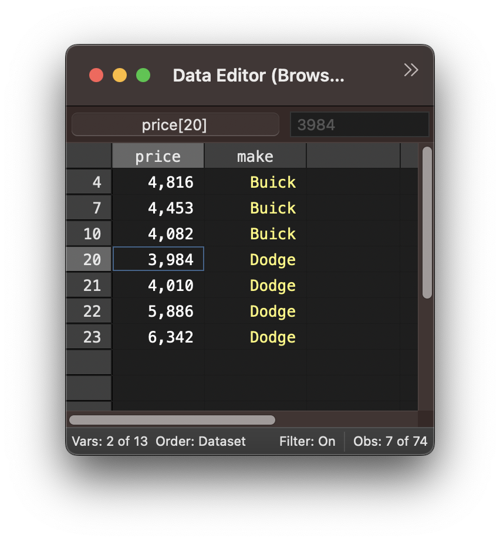
However, if we look at the values, you will notice that while all Buick cars have a price below 5000 USD, there are Dodge cars with a price above 5000 USD.
We get this output since the expression make==“Buick” and price < 5000 are being grouped together through the &. Therefor, Stata will select observations where the variable make is equal to “Buick” and the variable price is below 5000 USD and also all observations with the make being “Dodge” irrespective what the value of the price variable is.
In order to select cars that are either a Dodge or a Buick and have a price below 5000 USD, you have to put the first two expressions in parentheses. This way, you are effectively testing two conditions. The first is that the car is either a Dodge or a Buick and the second is that it also has a price below 5000 USD. The important difference is that the second condition, the price being below 5000 USD, now has to be true together with the car being either a Dodge or a Buick.
. list make price if (make=="Dodge" | make=="Buick") & price < 5000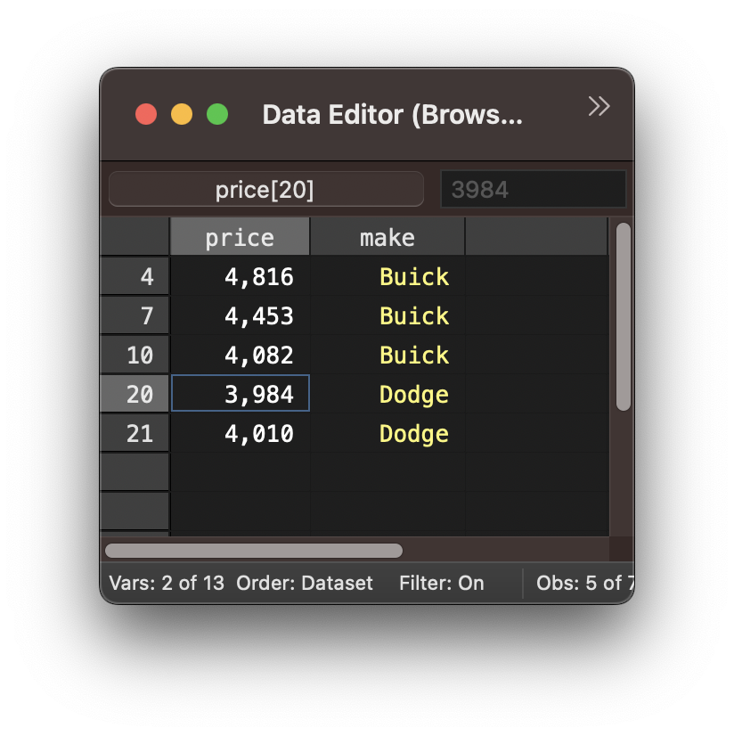
Exercise 2: if qualifiers with multiple expressions
- List cars with a price between 6000 and 7000 including both values.
- Create a histogram with the hist command of the car prices for all Buick or Chevrolet cars.
- Create a histogram of price for all Buick and Chevrolet cars with a minimum weight of 3000 Pounds. Use the frequency option and set the number of bins to 10. Use the help hist command if you don’t know how to customize the histogram correctly.
Using if qualifiers to replace values and create variables
If qualifiers are particularly useful to replace values in an existing variable. Similarly, you can use if qualifiers to create variables that recode existing variables.
In the following example we are creating a categorical recoding of the price variable under the new variable price_cat. The new variable price_cat categorizes the price variable into three bands:
- 0 : price below 5000
- 1 : price between 5000 and 10000
- 2 : price above 10000
In the first step we simply create the variable price_cat and set all values to 0. We then use the replace command to replace the 0’s with 1’s where the price is equal or larger than 5000. Finally, we use the replace command again to replace the 0’s with 1’s where the price is larger than 10000.
. gen price_cat=0
. replace price_cat=1 if price >= 5000
(37 real changes made)
. replace price_cat=2 if price > 10000
(10 real changes made)
We can now use the tab command to inspect the frequency distribution of the different categories of the newly created price_cat variable.
. tab price_cat, sort
price_cat | Freq. Percent Cum.
------------+-----------------------------------
0 | 37 50.00 50.00
1 | 27 36.49 86.49
2 | 10 13.51 100.00
------------+-----------------------------------
Total | 74 100.00
Exercise 3: Replacing values using if qualifiers
- Create a new variable called german that codes for a car being german
or not.
- 0 : non-german
- 1 : german
- - Audi
- - BMW
- - VW
- What is the mean price of german cars?
📋 Leaving your session: confidence check
Please complete this short questionnaire just before you leave the workshop session. It helps us understand how confident you feel after the session. Continuing to another project in this session? Skip this questionnaire and complete the ending questionnaire only before leaving.
Open the leaving confidence check ↗